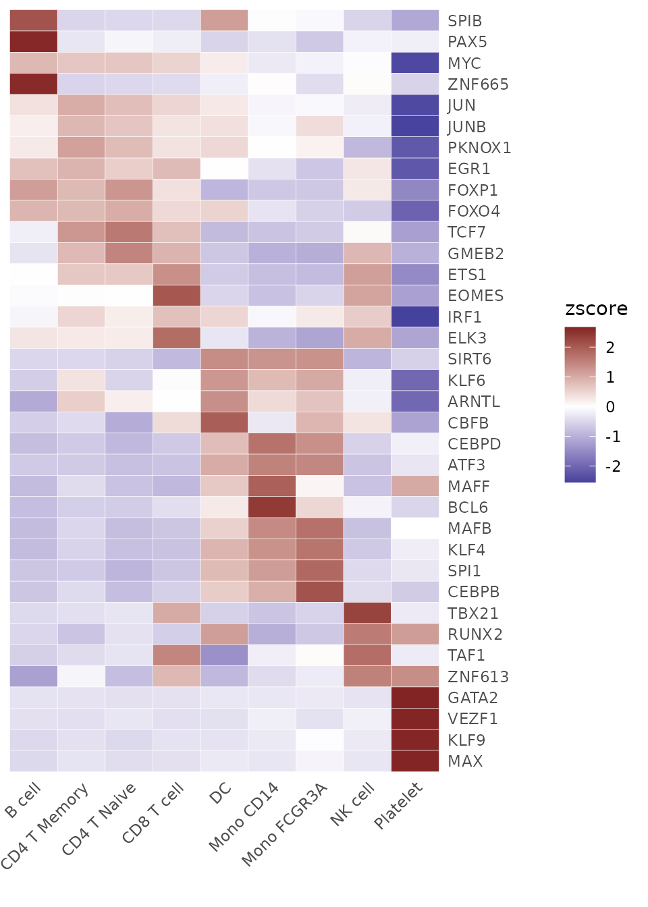
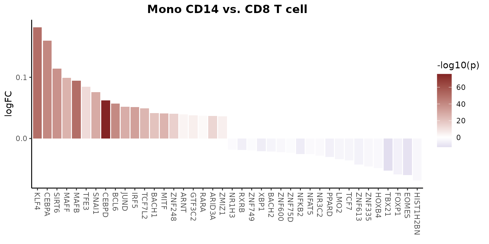

SCENIC for Gene Regulatory Networks Analysis
Yichao Hua
2024-11-28
SCENIC.RmdImporting SCENIC Loom Files into Seurat
SCENIC
(Single-Cell Regulatory Network Inference and Clustering) is a
computational method that provides deep insights into the regulatory
networks governing gene expression in single cells. It is highly
recommended to use the Nextflow pipeline to run SCENIC, which can be
found here.
This process requires a loom file as input, which can be generated
directly using the Seu2Loom() function. Currently, the
SeuratExtend package does not integrate the
RunScenic functionality directly (requiring the use of
Nextflow command line), but if there is user demand, this could be
considered for future updates. The workflow results in a file named
“pyscenic_integrated-output.loom,” which includes a list of
transcription factors (TFs) and their regulated genes, as well as a
TF-cell matrix representing the AUCell values. The AUCell score
represents the enrichment score of all genes regulated by a TF,
indicating regulon activity. The ImportPyscenicLoom()
function allows for the import of SCENIC-generated loom files into
Seurat objects, facilitating further analysis and visualization within
the Seurat framework.
As an example, we use a pre-computed SCENIC loom file which can be downloaded as follows:
library(SeuratExtend)
scenic_loom_path <- file.path(tempdir(), "pyscenic_integrated-output.loom")
download.file("https://zenodo.org/records/10944066/files/pbmc3k_small_pyscenic_integrated-output.loom",
scenic_loom_path, mode = "wb") # Use binary mode for Windows compatibility
# Importing SCENIC Loom Files into Seurat
pbmc <- ImportPyscenicLoom(scenic_loom_path, seu = pbmc)If you prefer to import SCENIC results without specifying a Seurat object:
# Importing SCENIC results without an existing Seurat object
scenic_output <- ImportPyscenicLoom(scenic_loom_path)Examining SCENIC Outputs
SCENIC results are stored in seu@misc$SCENIC, which
includes seu@misc$SCENIC$Regulons, a list where each
element’s name is a TF name and the value is a list of genes it
regulates. Additionally, seu@misc$SCENIC$RegulonsAUC, a
TF-cell AUCell matrix, is also loaded into the “TF” assay of the Seurat
object, making the manipulation of TF regulon activity as
straightforward as handling gene expression data.
# Viewing the outputs
tf_auc <- pbmc@misc$SCENIC$RegulonsAUC
head(tf_auc, 4:5)## AHR ARID3A ARNT ARNTL ATF1
## CTATAAGATCGTTT-1 0.01406902 0.03347861 0.000000000 0.1144568 0.016730526
## GTGATTCTGGTTCA-1 0.00000000 0.00000000 0.000000000 0.1730939 0.017191920
## ACGTTGGACCGTAA-1 0.00000000 0.03189382 0.000000000 0.1463286 0.003671087
## GGATACTGCAGCTA-1 0.02483910 0.01347068 0.006867406 0.0945589 0.016670344
tf_gene_list <- pbmc@misc$SCENIC$Regulons
head(tf_gene_list, 5)## $AHR
## [1] "NFYC-AS1" "MYSM1" "ZZZ3" "FUBP1" "WDR77" "TMEM183A"
## [7] "TGOLN2" "SEC22C" "ATXN7" "RBPJ" "C5orf24" "CREBRF"
## [13] "POLR1C" "YIPF3" "RUNX2" "BCLAF1" "HOXA9" "HOXA10"
## [19] "CREB5" "STAG3" "POP7" "ASAP1" "RMI1" "PSMD5"
## [25] "LRSAM1" "ABI1" "HNRNPH3" "IFT46" "ST3GAL4" "BAZ2A"
## [31] "BRI3BP" "MICU2" "TLE3" "PARP6" "NPTN" "PPCDC"
## [37] "FAM103A1" "CHMP1A" "TMEM107" "PHF12" "TLK2" "NOL11"
## [43] "MBP" "DIDO1" "SH3GL1" "SPINT2" "RBFOX2" "GABPA"
## [49] "CCT8"
##
## $ARID3A
## [1] "CDC7" "IL6R" "LAMC1" "LINC01136" "CDC42EP3" "HNMT"
## [7] "GPBAR1" "OARD1" "GNB2" "ATP6V1F" "YWHAZ" "XPA"
## [13] "ANKRD22" "APLP2" "PSMB5" "LGALS3" "RPH3AL" "EMILIN2"
## [19] "ME2" "MAFB" "GNAS" "ARID3A" "UQCRFS1" "CECR1"
##
## $ARNT
## [1] "EPHB3" "SMIM14" "GPR68" "ANXA2" "MORF4L1" "ZFP3"
##
## $ARNTL
## [1] "SLC4A10" "AP2M1" "EMC2" "PHF20L1" "SLC43A1" "CFL1" "SPG21"
## [8] "CRB3" "RPS28"
##
## $ATF1
## [1] "CAMK2N1" "PAFAH2" "BCAS2" "S100A13"
## [5] "ZNF281" "LIN9" "THUMPD2" "CALM2"
## [9] "ACVR1" "NAB1" "ZDBF2" "SNRK"
## [13] "IFRD2" "DUSP7" "MITF" "FOXP1"
## [17] "DHX36" "KIAA0232" "TEC" "G3BP2"
## [21] "ZNF330" "ADAMTS6" "PPARGC1B" "RREB1"
## [25] "FAM65B" "GNL1" "SYNGAP1" "PAQR8"
## [29] "MOSPD3" "GNB2" "FIS1" "ARF5"
## [33] "RPS6KA3" "CCDC120" "PLS3" "TMEM187"
## [37] "SGK3" "PKIA" "PAG1" "RAD54B"
## [41] "UBAP2" "TESK1" "MRRF" "BAG3"
## [45] "CARS" "PGAP2" "BTBD10" "ITFG2"
## [49] "ESYT1" "C12orf73" "MLXIP" "SPATA7"
## [53] "C15orf41" "TLE3" "KIAA0556" "DNAJA2"
## [57] "CYLD" "PDP2" "CENPN" "RPH3AL"
## [61] "SMG6" "TMEM256-PLSCR3" "ARL4D" "B3GNTL1"
## [65] "GPCPD1" "SPAG4" "MYBL2" "ADNP"
## [69] "SBNO2" "CIRBP" "MVB12A" "PLEKHF1"
## [73] "TMEM147" "SPHK2" "EMC10" "ZNF787"
## [77] "DGCR8" "CRKL" "PDE9A"Visualizing SCENIC Results
Once SCENIC data is integrated into a Seurat object, users can
leverage a variety of visualization tools provided in the
Enhanced Visualization section to explore and interpret
these regulatory networks. Both the extracted tf_auc matrix
or the Seurat object itself can be used as inputs. Here are some
practical examples:
Identifying Top Activated TFs in Each Cluster
tf_zscore <- CalcStats(tf_auc, f = pbmc$cluster, order = "p", n = 4, t = TRUE)
Heatmap(tf_zscore, lab_fill = "zscore")
Comparing TF Gene Expression Levels and Regulon Activity (AUCell)
Since we have imported SCENIC results into the “TF” assay, we can easily access the corresponding AUCell values by prefixing “tf_” to the TF name:
DimPlot2(
pbmc,
features = c("ETS1", "ATF3", "tf_ETS1", "tf_ATF3"),
cols = list("tf_ETS1" = "D", "tf_ATF3" = "D"),
theme = NoAxes()
)## Loading required package: cowplot##
## Attaching package: 'cowplot'## The following object is masked from 'package:mosaic':
##
## theme_map
Simplifying Regulon Activity Access by Setting Default Assay
If you find manually adding “tf_” to each transcription factor cumbersome, you can set the default assay to “TF”, which simplifies operations involving regulon activity. For example, to create a waterfall plot that compares the regulon activity between two cell types, you can do the following:
# Setting the default assay to "TF" for easier access to regulon activity
DefaultAssay(pbmc) <- "TF"
# Creating a waterfall plot to compare regulon activity between monocytes and CD8 T cells
WaterfallPlot(
pbmc,
features = rownames(pbmc), # Using all available TFs in the "TF" assay
ident.1 = "Mono CD14", # First group of cells
ident.2 = "CD8 T cell", # Second group of cells
exp.transform = FALSE, # Disable transformation of expression data
top.n = 20 # Display the top 20 most differentially active TFs
)##
## Attaching package: 'tidyr'## The following object is masked from 'package:reshape2':
##
## smiths## The following objects are masked from 'package:Matrix':
##
## expand, pack, unpack
These examples illustrate how to integrate and utilize SCENIC analysis within the Seurat framework, providing a comprehensive approach to understanding gene regulatory mechanisms at the single-cell level.
## R version 4.4.0 (2024-04-24)
## Platform: x86_64-pc-linux-gnu
## Running under: Ubuntu 20.04.6 LTS
##
## Matrix products: default
## BLAS: /usr/lib/x86_64-linux-gnu/blas/libblas.so.3.9.0
## LAPACK: /usr/lib/x86_64-linux-gnu/lapack/liblapack.so.3.9.0
##
## locale:
## [1] LC_CTYPE=en_US.UTF-8 LC_NUMERIC=C
## [3] LC_TIME=de_BE.UTF-8 LC_COLLATE=en_US.UTF-8
## [5] LC_MONETARY=de_BE.UTF-8 LC_MESSAGES=en_US.UTF-8
## [7] LC_PAPER=de_BE.UTF-8 LC_NAME=C
## [9] LC_ADDRESS=C LC_TELEPHONE=C
## [11] LC_MEASUREMENT=de_BE.UTF-8 LC_IDENTIFICATION=C
##
## time zone: Europe/Brussels
## tzcode source: system (glibc)
##
## attached base packages:
## [1] stats graphics grDevices utils datasets methods base
##
## other attached packages:
## [1] tidyr_1.3.1 rlist_0.4.6.2 cowplot_1.1.3
## [4] RColorBrewer_1.1-3 viridis_0.6.5 viridisLite_0.4.2
## [7] rlang_1.1.4 scales_1.3.0 reshape2_1.4.4
## [10] mosaic_1.9.1 mosaicData_0.20.4 ggformula_0.12.0
## [13] Matrix_1.7-0 ggplot2_3.5.1 lattice_0.22-6
## [16] dplyr_1.1.4 loomR_0.2.0 itertools_0.1-3
## [19] iterators_1.0.14 hdf5r_1.3.11 R6_2.5.1
## [22] Seurat_5.1.0 SeuratExtend_1.1.0 SeuratObject_5.0.2
## [25] sp_2.1-4 SeuratExtendData_0.2.1
##
## loaded via a namespace (and not attached):
## [1] rstudioapi_0.16.0 jsonlite_1.8.8 magrittr_2.0.3
## [4] spatstat.utils_3.0-5 farver_2.1.2 rmarkdown_2.29
## [7] fs_1.6.4 ragg_1.3.2 vctrs_0.6.5
## [10] ROCR_1.0-11 memoise_2.0.1 spatstat.explore_3.2-7
## [13] forcats_1.0.0 htmltools_0.5.8.1 haven_2.5.4
## [16] sass_0.4.9 sctransform_0.4.1 parallelly_1.37.1
## [19] KernSmooth_2.23-24 bslib_0.4.2 htmlwidgets_1.6.4
## [22] desc_1.4.3 ica_1.0-3 plyr_1.8.9
## [25] plotly_4.10.4 zoo_1.8-12 cachem_1.1.0
## [28] igraph_2.0.3 mime_0.12 lifecycle_1.0.4
## [31] pkgconfig_2.0.3 fastmap_1.2.0 fitdistrplus_1.2-1
## [34] future_1.33.2 shiny_1.8.1.1 digest_0.6.36
## [37] colorspace_2.1-0 patchwork_1.2.0 tensor_1.5
## [40] RSpectra_0.16-1 irlba_2.3.5.1 textshaping_0.4.0
## [43] labeling_0.4.3 progressr_0.14.0 fansi_1.0.6
## [46] spatstat.sparse_3.1-0 httr_1.4.7 polyclip_1.10-6
## [49] abind_1.4-5 compiler_4.4.0 withr_3.0.0
## [52] bit64_4.0.5 fastDummies_1.7.3 highr_0.11
## [55] MASS_7.3-61 tools_4.4.0 lmtest_0.9-40
## [58] httpuv_1.6.15 future.apply_1.11.2 goftest_1.2-3
## [61] glue_1.7.0 nlme_3.1-165 promises_1.3.0
## [64] grid_4.4.0 Rtsne_0.17 cluster_2.1.6
## [67] generics_0.1.3 gtable_0.3.5 spatstat.data_3.1-2
## [70] labelled_2.13.0 hms_1.1.3 data.table_1.15.4
## [73] utf8_1.2.4 spatstat.geom_3.2-9 RcppAnnoy_0.0.22
## [76] ggrepel_0.9.5 RANN_2.6.1 pillar_1.9.0
## [79] stringr_1.5.1 spam_2.10-0 RcppHNSW_0.6.0
## [82] later_1.3.2 splines_4.4.0 survival_3.7-0
## [85] bit_4.0.5 deldir_2.0-4 tidyselect_1.2.1
## [88] miniUI_0.1.1.1 pbapply_1.7-2 knitr_1.48
## [91] gridExtra_2.3 scattermore_1.2 xfun_0.45
## [94] mosaicCore_0.9.4.0 matrixStats_1.3.0 stringi_1.8.4
## [97] lazyeval_0.2.2 yaml_2.3.9 evaluate_0.24.0
## [100] codetools_0.2-20 tibble_3.2.1 cli_3.6.3
## [103] uwot_0.2.2 xtable_1.8-4 reticulate_1.38.0
## [106] systemfonts_1.1.0 munsell_0.5.1 jquerylib_0.1.4
## [109] Rcpp_1.0.13 globals_0.16.3 spatstat.random_3.2-3
## [112] png_0.1-8 parallel_4.4.0 pkgdown_2.0.7
## [115] dotCall64_1.1-1 listenv_0.9.1 ggridges_0.5.6
## [118] leiden_0.4.3.1 purrr_1.0.2